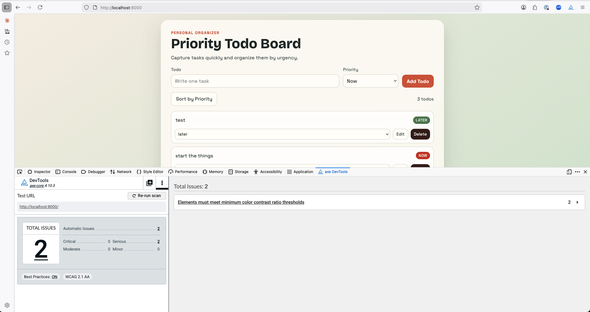
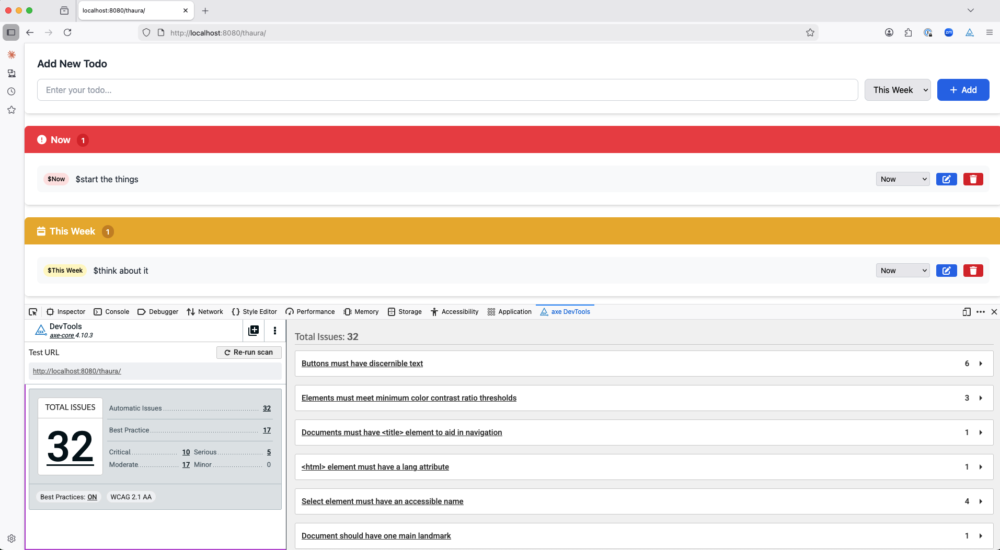

a11y Tools Testing
This page is for testing various a11y tools on different AI platforms. Each row in the table below represents a platform, with the left column showing the platform without any a11y tools and the right showing the a11y tools applied.
Though the iframes may show a limited view of each platforms a11y performance, its useful to review the changes in the axe dev tool testing done.
| Platform | With a11y tool |
|---|---|
claude-chat

|
claude-chat-using-frontend-a11y

|
claude-code

|
claude-code-with-a11y-agents

|
|
copilot
 |
copilot-with-codea11y

|
|
thaura
 |
thaura-with-a11y-rules

|